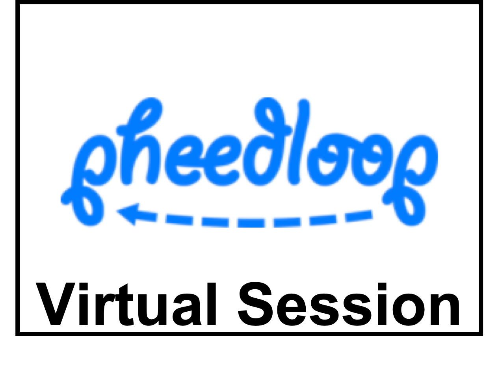

Thibaut Kulak (Idiap Research Institute); Joao Silverio (Idiap Research Institute); Sylvain Calinon (Idiap Research Institute)
 |
 |
 |
Whether in factory or household scenarios, rhythmic movements play a crucial role in many daily-life tasks. In this paper we propose a Fourier movement primitive (FMP) representation to learn such type of skills from human demonstrations. Our approach takes inspiration from the probabilistic movement primitives (ProMP) framework, and is grounded in signal processing theory through the Fourier transform. It works with minimal preprocessing, as it does not require demonstration alignment nor finding the frequency of demonstrated signals. Additionally, it does not entail the careful choice/parameterization of basis functions, that typically occurs in most forms of movement primitive representations. Indeed, its basis functions are the Fourier series, which can approximate any periodic signal. This makes FMP an excellent choice for tasks that involve a superposition of different frequencies. We show that it is successful for tasks that involve a superposition of different frequencies.Finally, FMP shows interesting extrapolation capabilities as the system has the property of smoothly returning back to the demonstrations (e.g. the limit cycle) when faced with a completely new situation, being safe for real-world robotic tasks. We validate FMP in several experimental cases with real-world data from polishing and 8-letter tasks as well as on a 7-DoF, torque-controlled, Panda robot.
|  | Start Time | End Time |
|---|---|---|
| 07/15 15:00 UTC | 07/15 17:00 UTC |
The suggested approach to represent complex periodic motion as a FMP clearly has some appeal. The motivation at the beginning of the paper, i.e., that periodic motion is hard to program, and thus requires a more complex LfD approach is a bit overstated, as it is really easy to create periodic motion with a couple of sine-waves, and also to create wiping patterns this way -- the evaluations of the paper do not make it clear that there any use to represent the distribution of the demonstrations. The technical development is easy to follow. What puzzles me a bit is the very high dimensional mixture of Gaussians, which should be numerically quite brittle. Nothing is mentioned how the covariances are initialized. The paper mentions that Gaussians hardly overlap. But then, what is the purpose of the mixture model. Does the mixture actually contribute, or would one single Gaussian be sufficient? The covariance appears to be full matrices -- is this necessary? Numerically definitely not the best. This mixture modeling component is technically the least convincing. The evaluations are useful to demonstrate and compare the approach. The improvement of ProMP are a good effort to keep the comparisons reasonable. Still I would be curious about the numerical robustness, at which length of the number of samples in a segment the mixture model becomes problematic, and also whether the mixture model is actually contributing anything. Also info about the parameter settings of the mixture model is missing. The panda wiping example is nice, but such a wiping task can be easily programmed in a different way. Are there any tasks where it is actually useful/important to have probabilistic representation, rather than only the mean? some details: Page 2, first column, last sentences: not clear what is really stated here, and a bit without context. Page 4, top: "tracking" -- it is not quite clear what tracking is meant here. I assume a desired signal is tracked. Page 5, bottom: hyperparameter h: isn't there an easy way to choose to have some overlap of the Gaussian for smooth interpolation? To what number is h actually set? 20Hz data is a very coarse sampling, only for motion that has low frequency.
| |
|
|